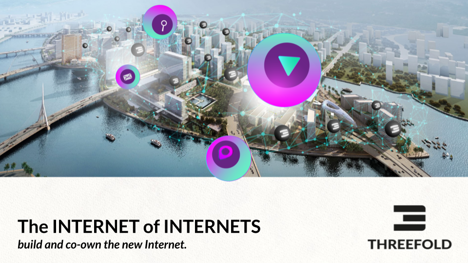
Introduction
Imagine a world where “YOU” are the Internet.
Imagine a world where communities can build their own Internet,
from scratch, an Internet which would deliver all the needs for a better future life.
This new Internet is here! It includes:
- a regenerative, safe, sovereign internet infrastructure layer = ThreeFold
- a set of experiences (applications) and information to allow everyone on an equal basis to learn,
create, exchange, travel, … basically to experience an abundance-based world
Abundance is our baseline:
- An abundance of free information, education, knowledge (books, journals, studies), planetary information (maps), creativity (music, video, digital art, immersive museums).
- Access to all applications required for your professional and personal digital life.
- No need for manipulative marketing: you can find anything for free and you can promote everything for free.
- You can safely communicate with the world.
- You can freely exchange anything for anything else (money for goods, goods for goods, money for money, etc.).
The decentralized Internet like you co-own a super computer which gives yous unlimited access to advanced digital experiences in super high quality, such as augmented reality (education, shopping, …), virtual reality (online meetings, travel, concerts, …), metaverse (a metaverse owned by you), and more.
You can keep your full digital life history in your personal ultra-secure archive. All the data is yours, forever !
The Internet Today

The internet today is constructed in a centralized way, we exist many times and became a product of big centralized services. There is also a real cyber pandemic going on, there are cyber attacks everywhere and backdoors in most of the electronic equipment we use. This architecture is unsafe, not scalable, power hungry and not able to deliver equality. Still more than half of this planet does not have decent affordable access to the internet.
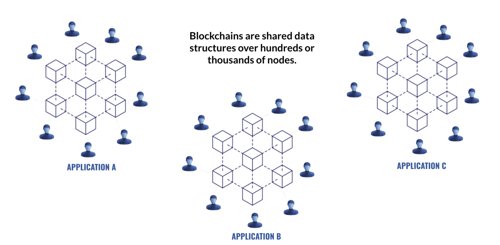
Blockchain is a huge step in the right direction but it's a shared architecture distributed over the world where data gets replicated on many locations. It's a good technology choice for use cases like money, smart contracts, voting, digital notary and identity but not at all suited for building a new internet with. This is also called web 4. Developers still need to develop applications connecting to multiple blockchains and centralization is often not good enough.
Web Re-Made Architecture
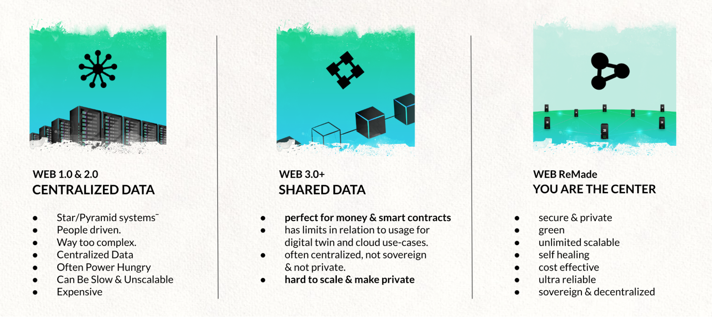
We are brainwashed about the need to centralize & control everything, this leads to suboptimal systems and a lot of waste. Web 1,2,3,4 are all centralized by nature. The best the world has been able to come up with is a shared consensus driven architecture called blockchain which is good for certain use cases but suboptimal for many more.
The solution is actually very simple, you should be the center of your digital life, you own all your data, you are your own application (we call this your digital twin), we believe +90% of your digital needs can be implemented that way. Blockchain technology is needed for items where consensus is required like identity, money, smart contracts…

There is a need for a co-owned global Internet infrastructure on top of which each of us can exist digitally, this is a dramatically different architecture with no centralization whatsoever and offering 100% equality as well as full data and application ownership. This has never been done because it's so different in design and goes away from any form of control by a money making company.
The Twins live on top of the ThreeFold Grid which is a co-owned infrastructure layer where every Internet Farmer makes money by providing storage, compute & network capacity to the people around them.
The twins communicate with each other and the rest of the world (existing centralized services) as well as existing blockchain technologies. The data is using a novel storage technology which makes sure your data is safe and can never get lost, yet it's only owned by you and not even a quantum computer can hack it.

Imagine the benefits for use cases like video conferencing:
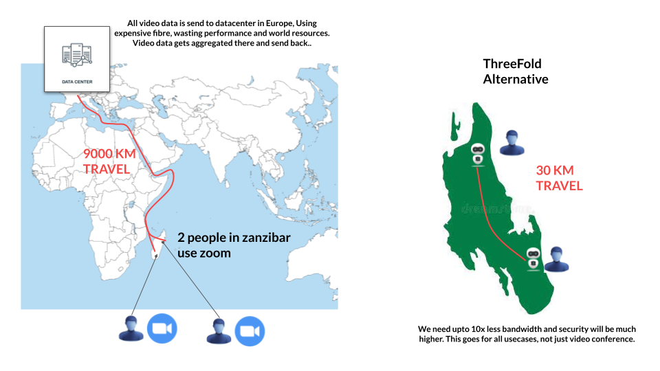
Why a new internet?
THE CURRENT INTERNET CANNOT KEEP UP WITH EMERGING DEMAND.
The digital economy and our future as digital citizens are wholly dependent on the Internet. However, today’s Internet and cloud infrastructure is too centralized, cannot grow fast enough to meet growing demand nor support future use cases, and promises neither data sovereignty nor equality.
More than 80% of today's Internet infrastructure is owned by less than 20 organizations. The lack of ownership of our own data and the consequent commercialization of that data is a major concern for both individuals and governments alike. The future neutrality and democratization of the Internet is an absolute necessity in this regard.
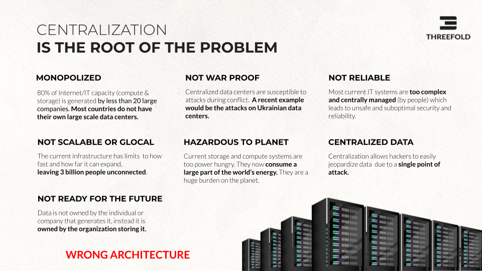
The Internet is growing like crazy. Today the Internet is mainly delivered out of data centers, which are huge buildings containing up to millions of servers. They consume a lot of energy and are very expensive to build. Building more data centers is not enough…
- There are not enough data centers and this won't change in the short term: it's too expensive and complex.
- Data centers are not war-proof and they are vulnerable to catastrophes (see Ukraine).
- They are not glocal (close to the source where required) and they are too centralized: as such, they present a single target for hackers.
ThreeFold is different, is an Internet of Internets solution, people can build and own their own internet in their region.
“ThreeFold Neighborhood Clouds'' are the alternative to centralized datacenters, transforming a typical neighborhood into a decentralized and distributed data center. Each home, office or commercial property can host a 3Node (a computer delivering Internet Capacity in the form of storage and compute power). These 3Nodes are interconnected over fast local networks (e.g. it can be in the neighborhood as a fiber ring or using local Internet existing cable infrastructure) and offer a quantum safe storage system, metaverse/gaming rendering cloud (coming in 2023), compute cloud, a platform for our digital applications to enable our day to day digital life, and more.
PLANET, PEOPLE, PROFIT
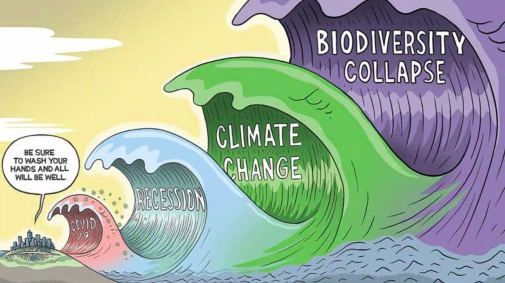

We believe in:
- Planet First
- People Second
- Profit As Result
Anything we do needs to improve our planet's situation (climate change, regenerative, respect resources, …) and help the people around us. As a result of doing so, we as investors of time and money will have created most value and will get the benefits from our efforts.
Of course being financially healthy is the first requirement.
We are in the forefront of a growing movement, more and more companies are being pushed by customers and stakeholders to prioritize sustainability and planet positive policies. We are not swimming against the stream, we are part of a group of leaders of change and making real the zeitgeist of the 21st century.
Together we are a movement, not just a project or company. Together we are creating the Internet of Internets:
- abundance based
- unlimited knowledge
- glocal communication and collaboration
- exchange of value without limitations or intermediaries.
To learn more about ThreeFold read our litepaper on: http://litepaper.threefold.me.
How does it work?

You can become an Internet Farmer today:

Farming Internet capacity is really easy and you can do it yourself today. Just buy a computer, go to our website, download our boot loader (which is a software which loads our operating system) and your computer is now a farming (mining) device that farms TFT, our Internet capacity reward token. If you do this yourself then we call this DIY (Do It Yourself) Internet Farming, more info see https://library.threefold.me/info/threefold#/tfgrid/farming/farming_intro
Additionally it makes a lot of sense to integrate in a real estate development project:
Imagine now a situation where people don’t have to do this by themselves, but where they can buy a house in which Internet Capacity is pre-integrated. Now their house is a node in a distributed and decentralized data center, creating benefits for the real estate developer as well as the homeowner. It can be compared to what a solar panel would do. Just like a solar panel generates electricity for the people around it, in the same way, our 3Nodes (Internet Capacity Boxes) provide Compute, Storage and other Internet Services to the people and companies nearby. A company or government will be able to host their data center Internet applications in the distributed data center which is part of the real estate project, which delivers greater security and performance at a better cost.
We call this: a “ThreeFold Neighborhood Cloud.”

Benefits of the Neighborhood Cloud Concept
Benefits for the Planet
- By enabling home owners to participate in a shared Internet economy, we avoid having to build power consuming data centers. Our digital twin technology consumes only 2-5 watt per person, which is nothing compared to the Internet today.
- We involve our sustainability partners in the real estate project to have an impact on the regenerative nature of a project.
- We impact at least 9 of the 12 Social Development Goals (SDGs) with our approach.
Benefits for the Country
- When a country gets more Internet Capacity locally, fewer data centers need to be built.
- Data & applications remain in the country, this leads to more sovereignty.
- A local internet has higher performance, with faster speeds, lower latency, and easier scalability.
- Green, a ThreeFold Neighborhood Cloud, is carbon negative.
- More security, recently in Ukraine, data centers were the first target, this approach eliminates this risk.
Benefits for the Homeowner
- Freedom, there is no longer the requirement to be a product from the Facebooks of the world. You can own your data.
- Free access to a co-owned internet with all benefits possible.
- It's like having access to a super computer which provides an immersive gaming and metaverse experiencethat can be rendered in the cloud at high quality. This leads to incredible possibilities. The kids for sure will love it. The technical ones can even develop on the local cloud.
- Have access to community services, e-commerce, local services, collaboration tools, communication tools, etc.
- As delegated farmers, they will earn income (see simulation table below) and, with some luck, could create a significant passive income source, offsetting the home cost.
- More security, reliability, privacy and performance for their Internet experience.
Benefits for the Developer
- Faster & easier sales of the homes – in our first project, the developer sold a lot faster.
Within 2 months this developer asked us to do a 2nd project with double the amount of homes. - Income for delivering Internet services to the companies, country and people around your property.
- More financial income, because the developer becomes co-owner of the local Internet and gets X% of the INCA (see next page) proceedings. This can be quite substantial.
The missing layer for a more decentralized world
A FEATURE COMPLETE INTERNET & MONEY SYSTEM.
ThreeFold has successfully developed a peer-to-peer cloud operating system running on bare hardware (directly using the computer native resources) to make all of the above possible.
This is the result of 20 years of work. 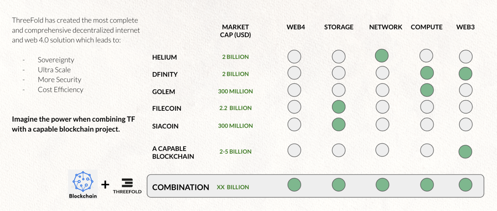
Imagine the capabilities and potential of a combination of blockchain and our technology to deliver a feature complete internet and money system.
The BTC for internet infrastructure
| BTC for Money | ThreeFold for Internet Infrastructure |
|---|---|
| $ are created by central banks, BTC by the people | Cloud by Amazon, Google, …, TFT by the people |
| Mining of BTC based on energy | Farming of TFT based on storage, compute, network |
| Endless Potential | Endless Potential, + trillion USD market |
| Store of value = digital currency | Store of Value = utility token = Internet capacity |
| Price is currently > 30k USD | Price is currently around 0.05 USD |
Our token is a digital currency backed by a real commodity = Internet capacity.
The current liquid market cap value for threefold is less than 30m USD which represents a real opportunity if compared to the potential.
TFToken = the Valuable Token of The Internet of Internets
ThreeFold uses the power of digital currency models to create value.
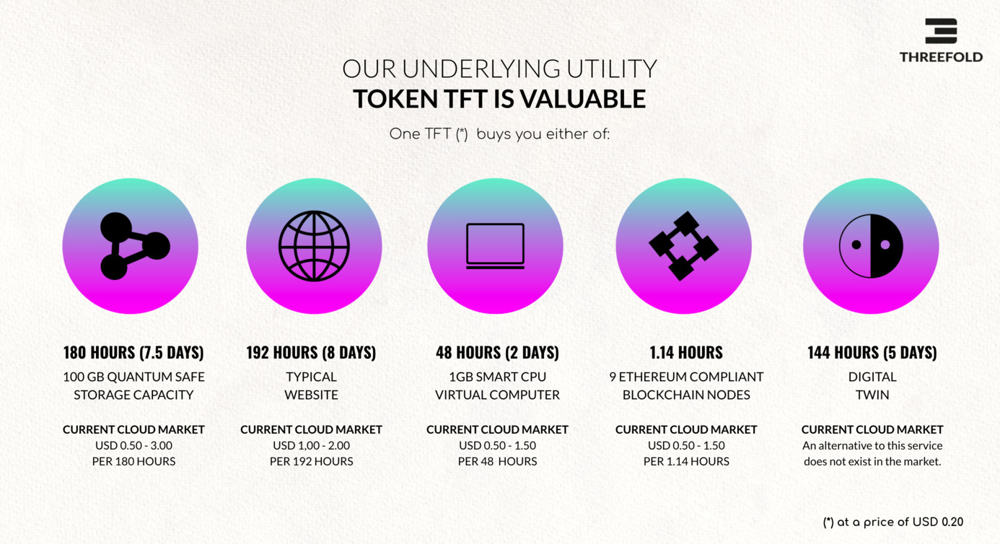
TFT is valuable and delivers the resources described above for a certain number of hours. You can do much more with a TFT than what is described above. It's just an example, but it shows the real utility of a TFT.
See https://library.threefold.me/info/threefold#/tokens/grid_valuation
Our Token is Properly Constructed
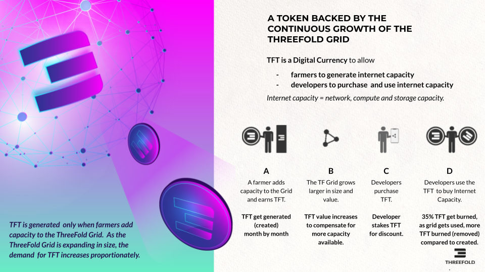
See https://library.threefold.me/info/threefold#/tokens/tokenomics
4 phases, TFT is Scarce and Valuable

The first phase has been focused on the initial expansion and the creation of all the technology required (this phase is now completed. The next two phases are all about accelerated expansion, and this requires many billions of tokens and tens of thousands of servers, neither of which are available today. To support the accelerated expansion phase, we are now establishing a set of liquidity pools.The more TFT flow, the more successful ThreeFold will become.
Phase 1 = The Creation & Initial Roll out Phase (Completed)
- Creation of the ThreeFold Grid, rewards for all early farmers & technology providers. +50m USD invested.
- Initial roll out, Proof of technology (we are now gen 3), every day new capacity is extended without our involvement.
- We are now at the end of phase 1, the market cap of the tokens is < 20m USD, this represents a real opportunity.
**Phase 2 = Expansion Phase = Requires X Billion TFT = STAKING FOR EXPANSION
**
- This stage will need multiple billions of TFT, this will stabilize the TFT price & drive liquidity.
- While the world is becoming less stable, more and more people realize that they need a new Internet and more stable digital currencies. Because of the underlying tokenomics, TFT might be a good future inflation hedge.
- Liquidity Flow Providers (LFP) power the financial system of this model, providing flow.
Phase 3 = Web 4.0 Roll out = Requires Y Billion TFT = BUY THREEFOLD KEYS
- The Twin for Life concept holds the key to our digital future.
- A first roll out for web 4.0 will be called Uhuru our alternative to +10 digital internet experiences (also called FreeFlow).
**
Phase 4 = Velocity Phase = the engine is running at full speed = the world has a new internet (-: **
- TFT is needed everywhere to get access to
- Web 4.0 - hundreds of millions of twins
- TFGrid Internet Capacity
- Rendering & Streaming capacity for Gaming & Metaverse Capacity (this will be HUGE)
- DEFI Pools for more P2P currencies
- This will lead to increased velocity and flow: this is how a valuable digital currency is being created.
- As part of this phase, we burn (take out of circulation) more tokens than we create thanks to our burning concept.
For Phase 2 and 3, we would require +100 Billion of TFT if the TFT price were not to rise from current absurdly low prices, there is simply nowhere near enough TFT available so the TFT price must rise as a consequence.
3 Dimensions in Token Creation & Utilization
1. Proof of Capacity = Farming
3Nodes (computers) deliver storage, compute, and network capacity as the basis for our new Internet.
Our Unique Operating system measures the capacity as provided by a farmer and this gets registered in our blockchain.
TFT Reward per Month = 3Node Capacity * TFT Reward per Unit of Capacity / Month.
This TFT Reward Amount :
- is recorded in the blockchain at the moment of 3Node registration and verification,
every hour our operating system and blockchain verifies the available capacity. - Is calculated so that it generates per month +- 1/5 of all TFT needed to buy all capacity at the point of registration.
e.g. if a 3node can generate commercial value of 100 USD per month for all internet capacity and the TFT price is 0.1 at that point, then _100*0.1/5 _is +- the amount of TFT that will be rewarded (generated) per month.
This means TFT is by design +- 5 times undervalued in relation to 100% utilization at connection. - The TFT reward amount is agreed upon by the DAO per Regional Internet to make sure there is consensus.
The farmer can receive boosters rewards (still to be defined) if certain achievements are achieved e.g. uptime, good bandwidth to Internet, good utilization. There is no link between farming & utilization.
More info see https://library.threefold.me/info/threefold#/tfgrid/farming/proof_of_capacity
Farming is the only way in which TFT are created (minted) !!!!
2. Proof of Expansion = Staking
Staking is the mechanism to let the community invest and benefit from the growth of the ThreeFold Grid.
The main TFT is like the reserve currency for the larger Internet of Internets, the TFT is the currency needed to go in between all the different Internets. To establish this Internet, a lot of TFT are needed.
We have 3 major staking concepts:
- Internet of Internets Layer: TFT Validators = 300m TFT
- Our TFT Validators (our master TFT money chain & identity chain) has 100 Validators.
- ½ have been reserved already
- Regional Internet TFGrid Validators = 1,000 (regions) x 100 (nr validators) x 500,000 (staking per validator) = 50 Billion TFT
- At current price of 0.1 we need 50 billion TFT (in case there would be 1000 Regional Internets)
- Regional Internet DEFI Pool = 1,000 x 5,000,000 = 5 Billion TFT
- This DEFI pool is between the master TFT and TFT on each regional level.
- Each regional Internet needs at least 500k USD worth of TFT at that point in the DEFI pool.
There are 800m TFT right now. The above described staking requirement needs +50 Billion TFT if the TFT would not raise in price, which is not possible. In other words, TFT will have to rise in price. Please do note the other mechanisms like burning will kick in as well.
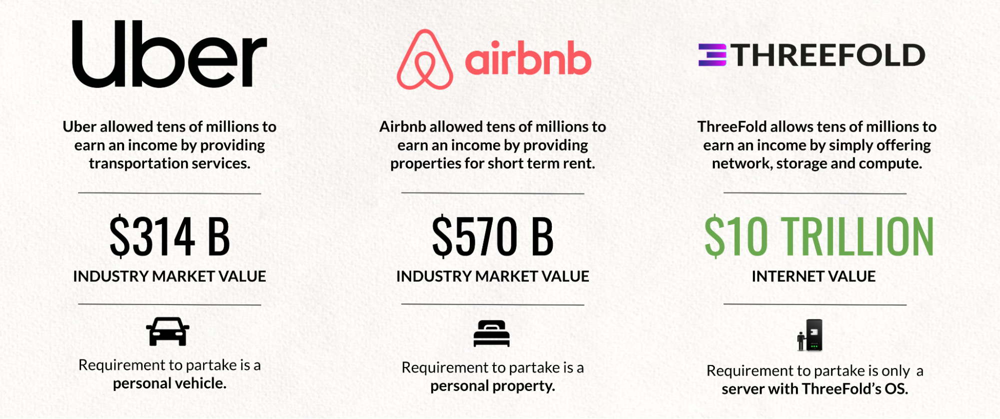
3. Proof of Utilization = Cultivation
When users use the capacity of the grid they need TFT, these TFT are burned and given to the channel.
Percentage Description Remark
35% TFT burning A mechanism used to maintain scarcity in the TFT economy.
10% ThreeFold Foundation Funds allocated to promote and grow the ThreeFold Grid.
5% Validator Staking Pool Rewards farmers that run TFChain 3.0 validator nodes.
50% Solution providers & sales channel (optional more burning)
In a couple of years 35% burning will be more than farming. This means as the grid grows, more tokens will be burned compared to farmed, which leads to more scarcity. In the beginning, utilization is small compared to farming & staking.
This will happen mainly in the last phase of our expansion mode as mentioned above.
More info see https://library.threefold.me/info/threefold#/tfgrid/farming/proof_of_utilization
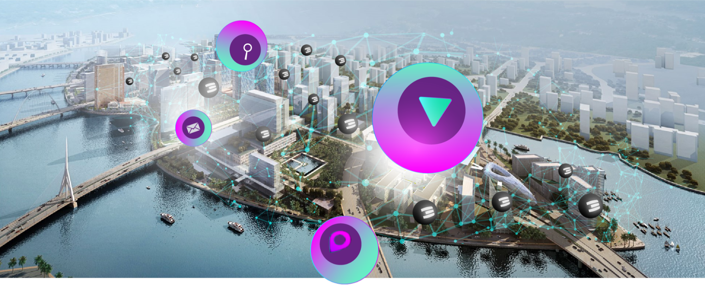
Internet of Internets Architecture
We have developed a massive scalable Internet concept which has 3 layers. The Threefold Internet of Internets approach needs to scale to billions of users, and needs to be available at all times. We believe the best way is not to have one internet but many internets, hence the name Internet of Internets.
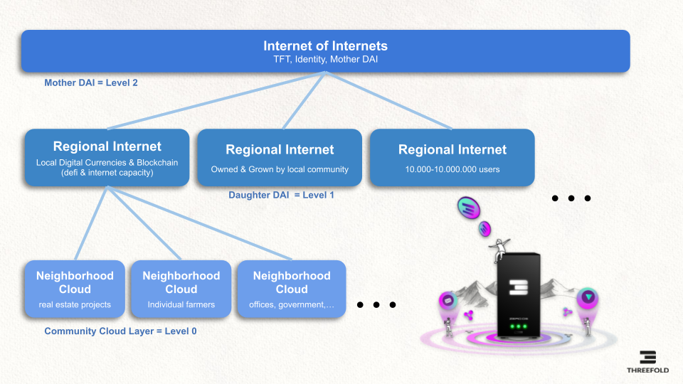
Above image shows how the Internet is hierarchical and scales forever. Each layer has a distinct purpose and allows the ecosystem to interact. While being hierarchical, it's still 100% peer-to-peer and decentralized.
Let's look at the different layers:
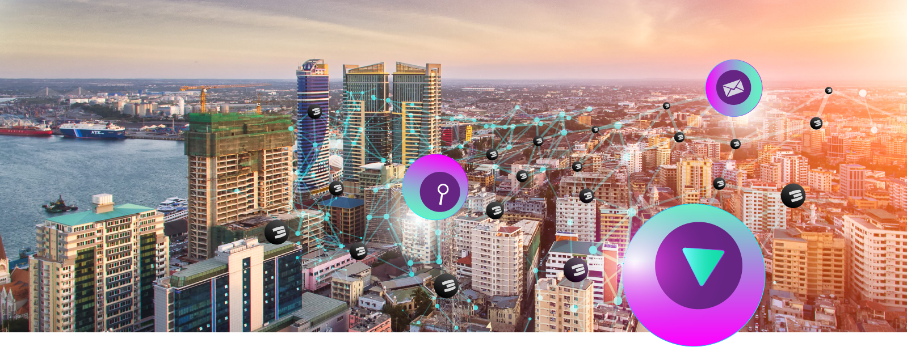
Layer 2 = Internet of Internets = Mother DAI
The top layer, the home of the ThreeFold Token (TFT) and the base governance layer.
-
Secured by 100 L2 validators
- The validator is funded and managed by a person who staked TFT (staking means locked TFT to the validator) to secure the validator. The 100 validators together need to find consensus about the transactions happening.
- Each validator needs 2m TFT, growing to 3m TFT, everyone in the world can delegate their stake to these validators.
-
Following functions are implemented on the Mother DAI**
**- Holds the ThreeFold Token = TFT, is our main digital currency blockchain.
- TFT is the digital currency used to reward TF Farmers as well as allow people to consume Computer/Storage/Application/Network capacity from the TF Grid.
- DAI = Decentralized Autonomous Internet, each validator has a certain amount of votes
and can vote on functions to do with the functions of the blockchain. - Reward system for the L2 validators, validators receive a reward for hosting the validator.
Everyone in the world can use this TFT to buy capacity from the Regional Internets (below) with just one currency called TFT.
5% of these proceeds go to the Validators. This is the global protection layer for all Regional Internets.
Each Regional Internet will have a read only Validator as part of their Region, this to make sure that Layer 1 can never go down, not even if the Global Internet gets cut in pieces because of war, natural disasters or countries cutting off their Internet.
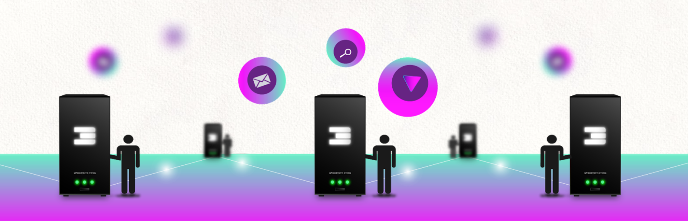
Layer 1 = OurWorld Regional Internet
Every community in the world can deploy their own Regional OurWorld Internet, a regional Internet that scales for millions of users. The Regional Internet has its own blockchain and can operate 100% independent from the other Regional Internets. Of course lots of connections are made between the Regional Internets.
A Regional Internet starts with max 99 founding fathers or mothers who deploy blockchain nodes with integrated support for DEFI. Each Regional Internet has its own ThreeFold Token (colored version), differences in farming & cultivation model are possible. Each Regional Internet has a DEFI pool to allow frictionless exchange between the master TFT and the TFT of each region.
This Regional Internet Enables
- A GDP positive system for the country the Regional Internet is hosted in.
- Independence, Sovereignty, Security, Green, Reliability, Performance, … No Need to build more data centers.
- A new Internet infrastructure platform (fully peer-to-peer and decentralized, and super reliable)
- A new decentralized finance & digital asset exchange system, based on values.
- A set of incredible experiences, with the ability to provide digital freedom for all our online requirements.
- An upgraded economic system platform = Web 4.0, a new way to communicate, share, collaborate
We want to make it easy for everyone to get started (as part of last fundraise project)
- A full ebook (hundreds of pages) with all details information as needed to deploy a Regional Internet
- Train the Trainer programs, to allow everyone to install their own Regional Internet.
- Augmented/Video education how to deploy such a system.
A Regional Internet comes pre-populated (as part of last fundraise project).
- We are executing on a huge effort to download and categorize +40 Petabytes of information from the existing Internet, this information will be available in each OurWorld Instance, making sure that all this information is protected and available to everyone in the world independent of what is or will happen
- We collect endless amounts of information (maps, educational content, source code, knowledge, ebooks, …).
Components of the Regional Internet
- Regional Internet Blockchain (RIB)
- 9-99 validators (secures the local internet)
- Hosts a local TFT (colored TFT with own price)
- DAO for management of the local OurWorld Internet
- A DEFI system, allowing regional economic activities to take place (Q4 2022)
- Initial Internet Capacity to host the base Information & Educational Layer (+40 Petabytes needed at this stage)
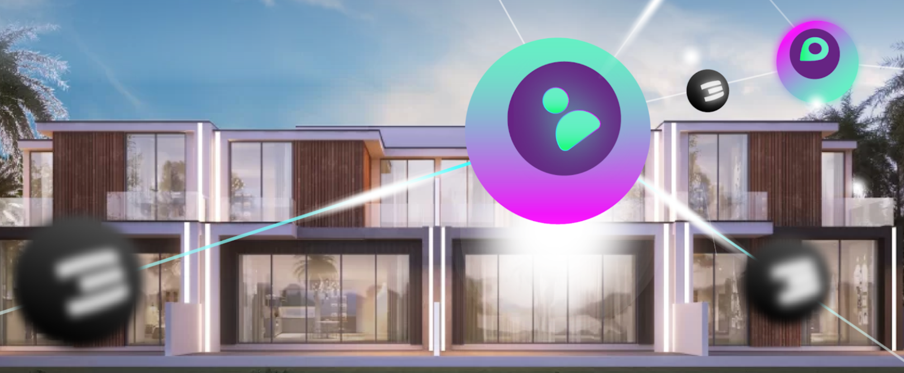
Layer 0 = Neighborhood Internet Layer = Neighborhood Cloud
This is the layer where the actual Internet capacity is being generated and communities together co-own their Internet.
There are 4 ways how this typically happens
- DIY = Do It Yourself farmers expand the Internet, happens today lots of farmers add capacity every day
- Certified 3nodes - Pre-built 3nodes that offer increased security and are plug-and-earn
- Neighborhood Real Estate deals, together with real estate developers, Internet capacity is added to the home.
- Neighborhood Commercial Property, Internet Capacity can be added afterwards to add value
Each Neighborhood Cloud has the following parts:
- Internet Infrastructure (Compute, Storage & Compute), usable for any possible workload.
- “Be Your Own Internet”
- Data Sovereignty, Safety, Green, Performance, Cost Effective, …
- A metaverse and gaming rendering engine, allow everyone to develop on top (Q4 2022)
- Web 4 Layer, running on top of the Internet Infrastructure
- The base layer to allow everyone to develop on top of the Neighborhood Cloud
The Following Experiences are by default available for each OurWorld Internet
- Sikana (education system with lots of content, +4billion views today)
- Uhuru (alternative on Office 365 of Google Docs/Drive)
- A Metaverse made to extend our daily life, and provide ultimate learning & shopping experience
- Alternative to Twitter, WhatsApp, Facebook, …
- An abundance based sharing app, everyone can exchange goods with each other (+100k users)
- A rental platform, based on local digital currencies.
- and so much more …
Deployment Models
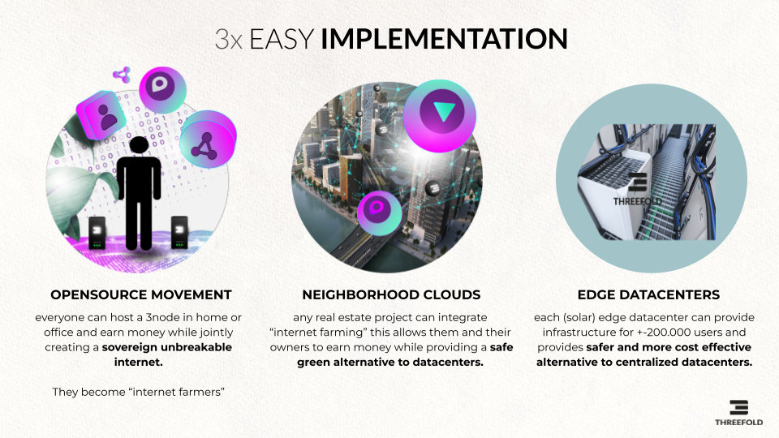
Open Source Deployment
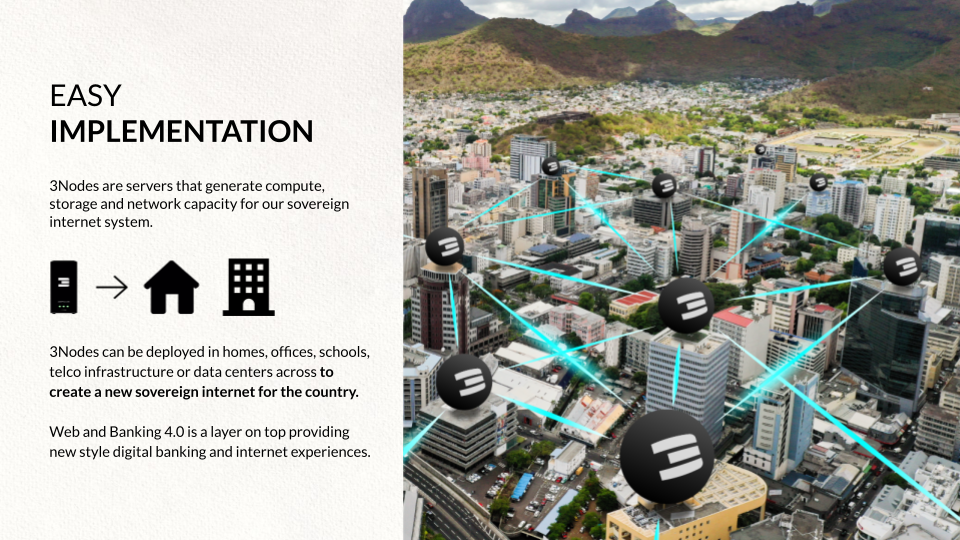
People everywhere in the world expand on daily basis see https://stats.grid.tf/ and the explorer for mainnet is on https://explorer3.grid.tf/ (see the nodes being added on our mainnet for TFGrid 3.0).
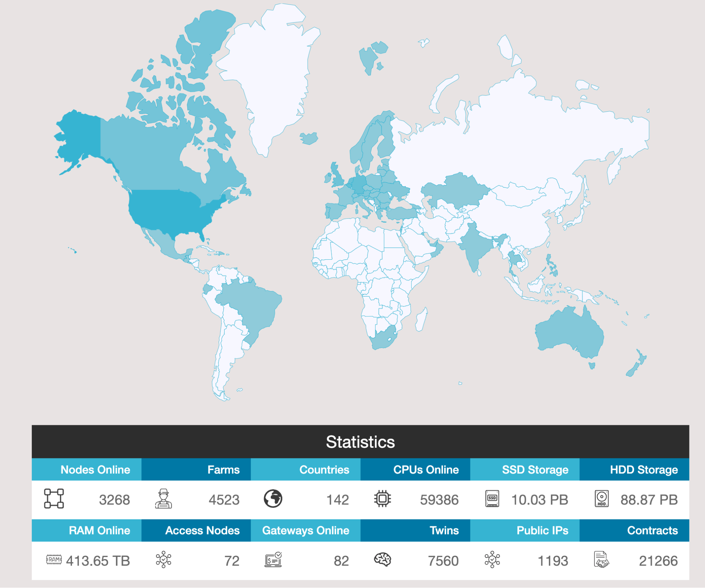
Neighborhood Cloud Model
ThreeFold SA (TFTech) combines theInternet Technology with Real Estate and other Commercial Projects. This can be done for new as well as existing projects. A first project for 170 houses has been signed with 5m USD revenue for the foundation, a 2nd project is close to being signed for 300 houses, and we have 5 more Real Estate deals in the pipeline. We call this approach also INCA which stands for INternet CApacity.
The Basic Pitch From Developer to Potential Homeowner or Commercial Property User
- INCA empowers projects to tap into the fastest growing economy in the world – the Internet and Cloud.
- By equipping their Real Estate project with local Internet infrastructure, developers:
- Turn their Real Estate properties into decentralized supercomputers that can support the emerging demand for Blockchain, IoT or the Metaverse
- Create potential future revenue for both the project and homeowners
- Provide incredible connectivity to the real estate development
The best part is that that infrastructure doesn’t account for more than 1-5% of the cost of a property, and is provided as a gift to the homeowners. What better than to sell a house with a gift that invites homeowners to participate in the decentralization movement and that can pay back the property itself.
Example for a 100 house project:
Imagine each home average costs 1m USD. ThreeFold gets 1-5% of the real estate project total revenue.
For 100 houses, this leads to 1-5m USD. We get this money as the project is being sold.
We don’t have to return the 5m USD, we create a token called INCA which returns TFT, our tokens.
An INCA (INternet CApacity) token generates TFT over 5 years.
Right now, 1 INCA costs 5 USD and generates 50 TFT over 5 years, this number changes as the TFT goes up.
We expect 1 INCA to generate up to 2 to 3x less TFT over 5 years by the end of this year.
This shows why it's important for a developer to be early in this process.
30% of the INCA are gifted to the developer, 70% of the INCA are gifted to the homeowner. So far, we did Y = 70%.
Simulation For Homeowner
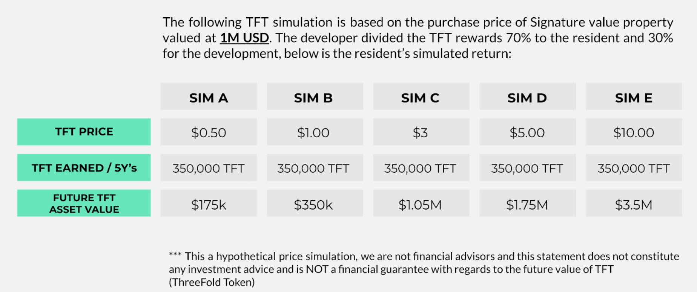
In this simulation, if the TFT price would go to $3, the homeowner would have their home for free.
Simulation For Developer
Next to the indirect advantages like lots of free marketing attention (happened for our partner in Dubai) and benefits for your community and the planet, there are also the following possible financial incentives:
- 5m USD leads to 30% of 50m TFT.
- If TFT goes to $3 -> 45m USD extra income, which is more income compared to the original project.
- If TFT goes to $10 -> 150m USD extra income.
Disclaimer, we are not making any promise nor TFT price prediction, this is pure simulation. See below for the TFT token section and make your own judgment about value for TFT.
Edge Datacenter Deployments
In some circumstances, it would take too long before the opensource deployment of neighborhood cloud concept would work in that case special purpose investment vehicles are created which allow investors to in invest in Internet Capacity deployment.
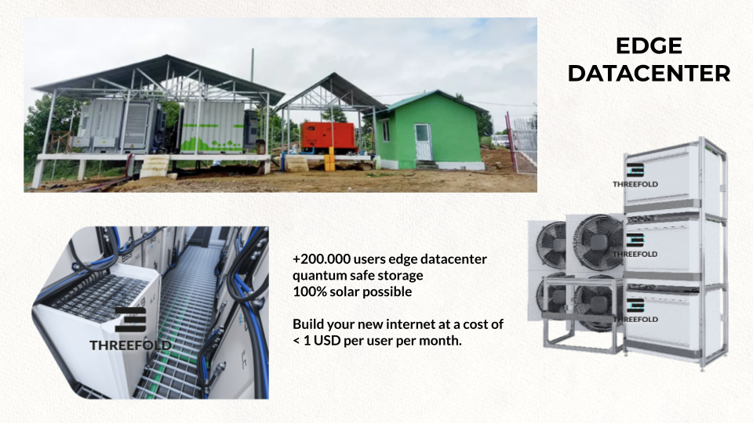
Above example has been created for Tanzania and allows 200.000 users to find their digital home per edge datacenter, do note that the data is not stored in 1 datacenter but dispersed over quite some of them.
Partners and Community First
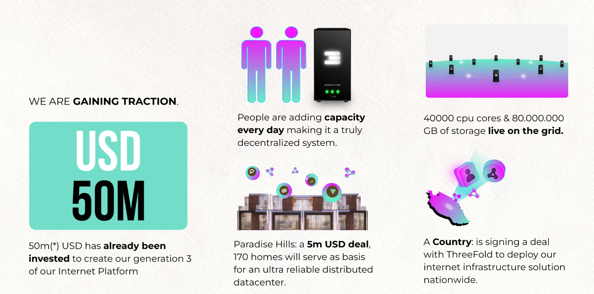
We are focussed on providing global decentralized IT capacity for any project in the world. We believe in partners, more than 40 partners are building on top of us already today. This needs to become thousands of them. We have blockchain constructs which allow partners to be part of ThreeFold and have their own revenue streams. We can be seen as a go2market vehicle for any software as a service or web business.
Right now, we are mainly focussed on expansion though, see our 4 dimensions of Growth below.
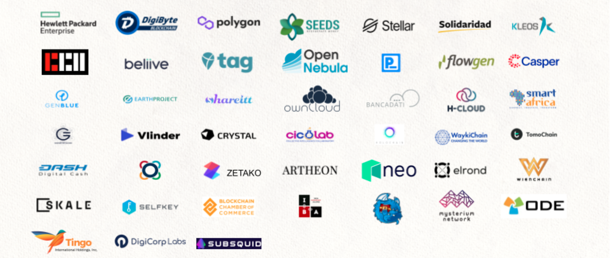
Tech: Missing Layer for Blockchain, Storage, Compute & GPU Workloads
Develop For Digital Twin versus Your Own Apps On Capacity Layer (TF Grid)
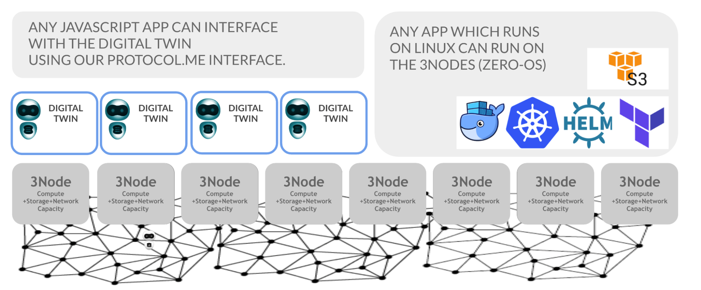
Zero-OS (see further) is used on the 3Nodes and provides the base layer with storage, compute & network capacity.
The Twins are a new development paradigm for building ultra scalable & sovereign internet dapps of the future, we use this ourselves to deploy the projects we are doing with large banks and some countries who are ready for a more regenerative internet future for their citizens.
Thanks to our Smart Contract of IT layer you can still use industry standard tools like kubernetes, helm, terraform, … to deploy any workload you would want, our solution is compatible with anything which can run on linux our additional storage and network primitives provide additional benefits.
Read more about our technology in https://library.threefold.me/info/threefold#/technology/technology
Tech: Zero-OS = blockchain driven secure operating system
Our Decentralized Operating System (called Zero-OS) allows every company or person in the world to farm (mine)
Internet compute, storage or network capacity which can be used by everyone to host their Internet solutions:
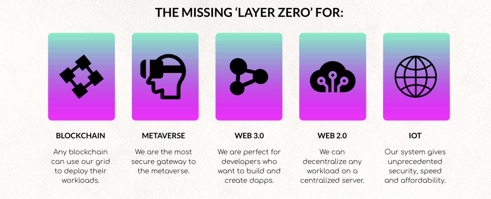
Our blockchain provisioning/utilization layer allows everyone in the world to provide or consume compute, storage and network capacity in full consensus. The TFT is the Utility Token which enables the exchange of value between participants and makes this possible. There are multiple possibilities how to interact with the capacity layer of ThreeFold Grid.
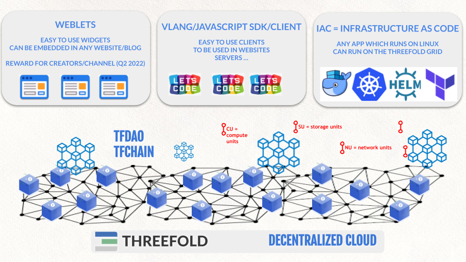
ThreeFold 3Nodes (the computers that provide the storage, compute and network capacity), can be as small as a 100 USD device or a big server for in a data center of 50,000USD per server. There is no limit to the scale we can achieve.
Each layer is as distributed as possible, already today a lot of capacity has been deployed in the world see https://stats.grid.tf .
Tech: Our Quantum Safe Storage System Protects Your Data
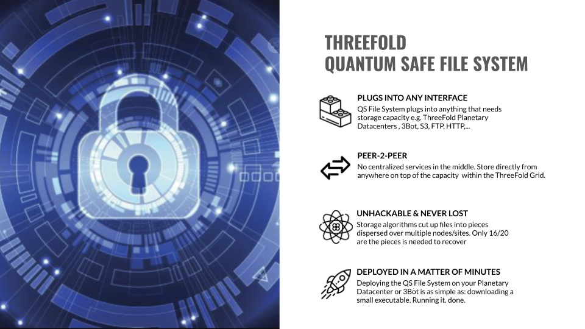
Your data is unlimitedly scalable and can never be lost or corrupted. You are the only one who owns your data.
ThreeFold nodes or even full data centers can go down, your data is always there, available forever.
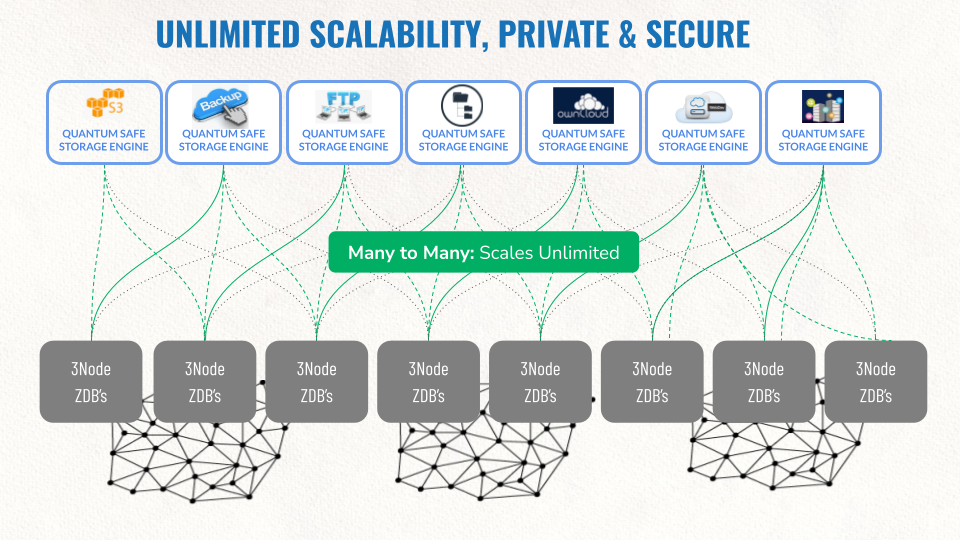
Your quantum safe storage system is very cost effective,** the cost of farming 1 TB of storage per month can be less than 1 USD, the market price is between 20 and 180 USD. **
Our storage system is the result of 20 years of engineering and many iterations, our last company was acquired for 300m USD for a subset of this technology.
Tech: Our Planetary Network Provides Ultimate Connectivity
Our network layer connects anything to anyone. We have clients for iPhone, Android, Windows, Linux and OS.
The end 2 end encrypted network will look for the shortest path between any app or user. It has a built-in DNS system and works seamlessly together with existing networks like the current Internet backbones and providers, satellite providers like starlink, 5G, Meshed Wireless (build our own networks with the community) or any other mobile technology. It's the swiss army knife for network connectivity in the world which tries to keep our data flowing all the time in all security.
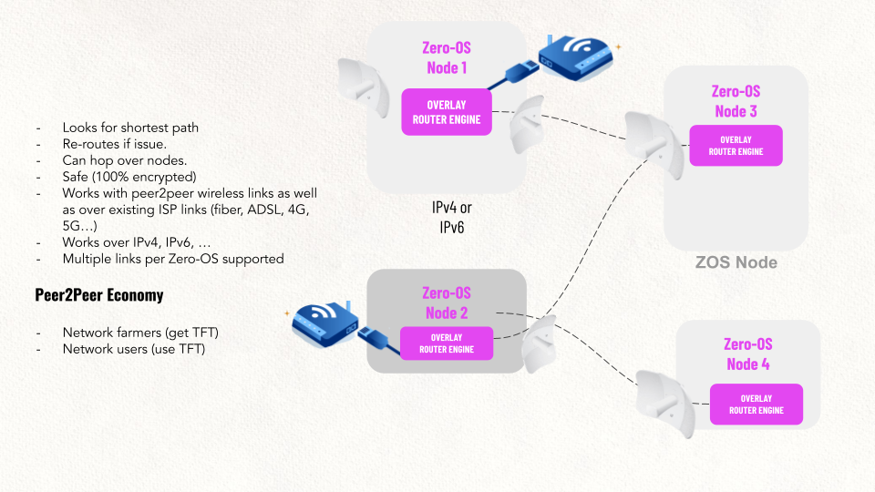
Your network address is unique to your device and you and never changes, doesn’t matter how you will communicate or where you are. If links go down the Planetary network client will look for other paths.
Read more about our technology in https://library.threefold.me/info/threefold#/technology/technology
Tech: Digital Twin Technology

Each twin is hosted on the ThreeFold Grid. The data is using the quantum safe storage layer and can never be corrupted or lost. This architecture is super scalable, billions of twins can be deployed.
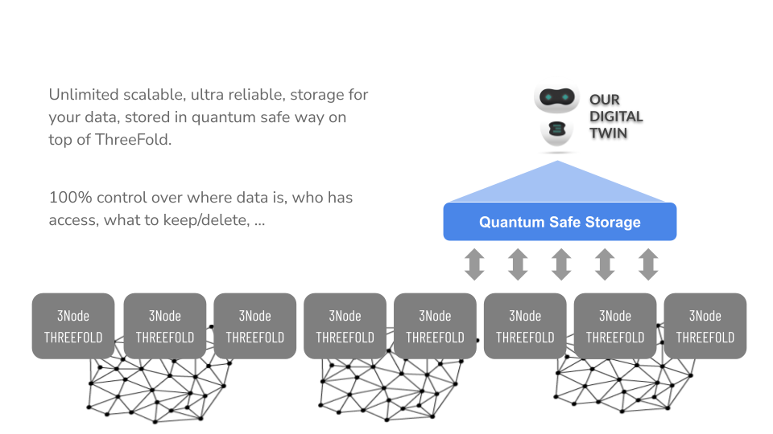
 Each digital twin talks directly to the other twins, this keeps information flow local and provides for a more green internet experience, it also improves security, performance and privacy.
Each digital twin talks directly to the other twins, this keeps information flow local and provides for a more green internet experience, it also improves security, performance and privacy.
The twin system is also compatible with IPFS to integrate with the web3 world.
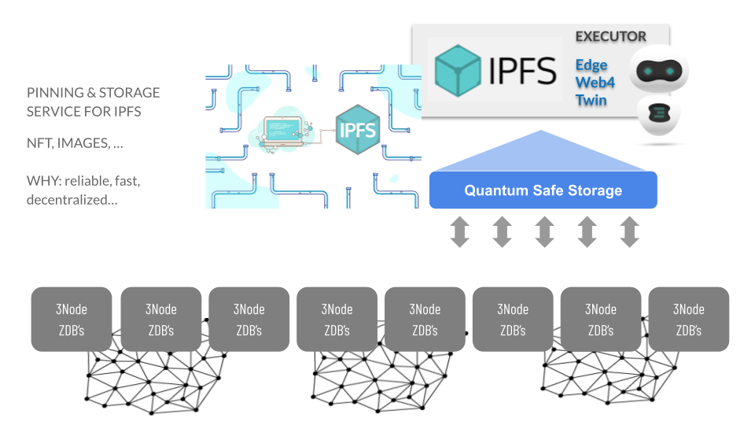
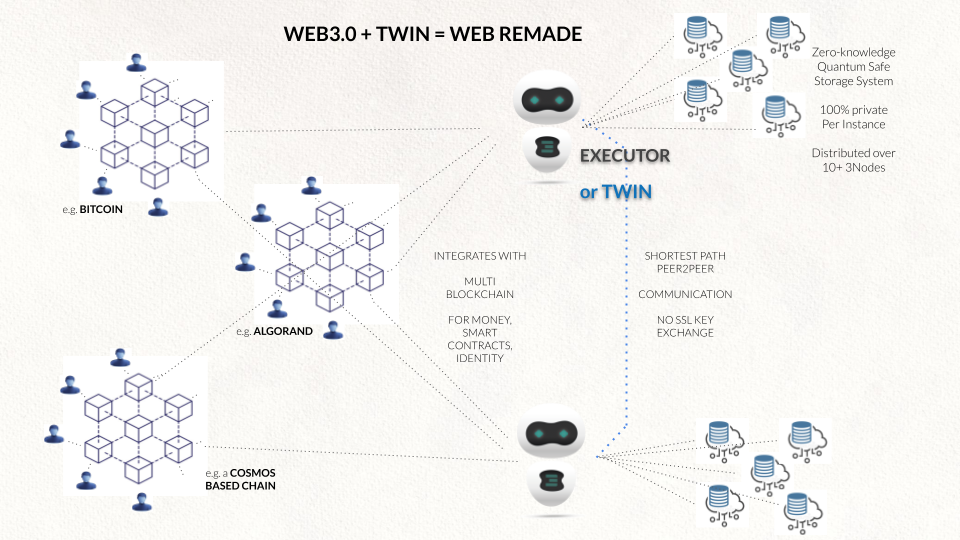
Each twin can talk to any blockchain around (web3) to arrange management of digital currencies and peer2peer exchange of value. The Twins are compatible with any major blockchain technology.
The twins can also talk to web 2 and own deployed client-server applications on top of the TFGrid. This leads to a super scalable & polyvalent ecosystem.
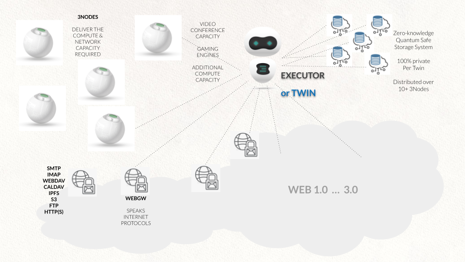
Experience Matters
We were fortunate to be part of the first rollout of the Internet in the early 1990’s.
Our team has multiple world records for scaling projects on the Internet, invented the first data deduplication system for backup, the first ultra scalable distributed storage system using forward-looking error correcting codes, one of the first cloud systems, the first always consistent distributed database, and the first decentralized operating system using blockchain technology. The team has achieved over +500m USD in exits to Sun Microsystems, Western Digital, Verizon, Symantec, and others.
Our ThreeFold system brings us back to the Internet as originally conceived. A collaborative and community-based network of compute, storage and network resources, peer-to-peer connected and delivered by all. Only this time, we can use advanced technologies and structures which were only developed very recently.
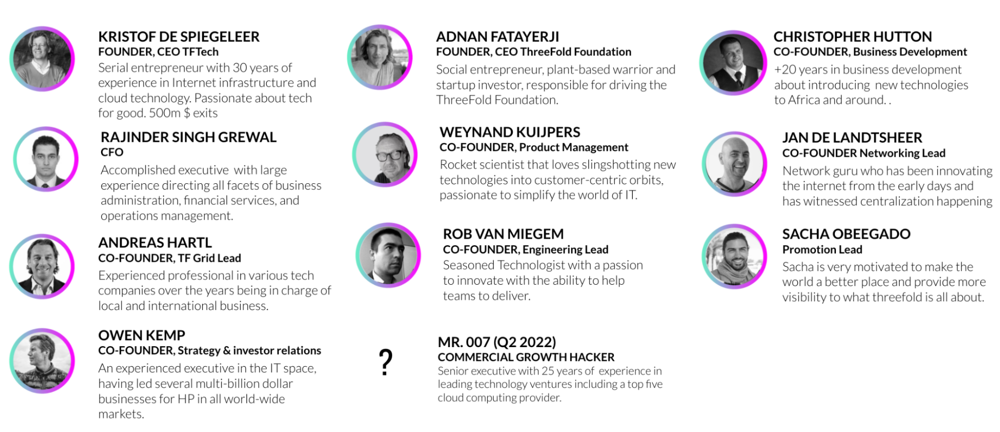
Kristof De Spiegeleer: Founder/Chairman (linkedin)
- 30 years experience building startups in the high tech space
- 7 exits, +500m USD
Mr 007, Q2 2022: Commercial Growth Hacker
- A senior technology executive, deeply vested in global, high growth and emerging markets. 25 plus years experience most recently as Corporate VP at one of the leading cloud computing providers (+100B). A board member, strategic advisor and social entrepreneur.
- Extensive sales and strategic partnership development experience particularly with enterprise and government sectors. Will help Threefold build a specialized sales team and strategic partnership frameworks to address the growing national and sovereign cloud requirements at country-wide scale. A growing trend for governments, and some enterprise and strategic sectors and communities that Threefold can certainly fulfill and develop.
APPENDIX
More Information
More Info ThreeFold
- ThreeFold Generic Presentation http://preso.threefold.me (lots of slides)
- ThreeFold Litepaper http://litepaper.threefold.me
OurWorld Internet of internets Concept
- OurWorld Abundance System http://abundance.ourworld.tf
- OurWorld Experiences http://experiences.ourworld.tf
Why:
- Opinionated Cyber Security Brief http://cyber_security_brief.ourworld.tf
- We already live in the matrix, let's escape http://thematrix.ourworld.tf
Is our Solution Competitive?
The following section will demonstrate how our technology is capable of delivering Internet Capacity at a price way lower compared to any other technology in the market.
The following pricing is only for Internet Capacity, there are thousands of more use cases on top of the Neighborhood Cloud Concept, it's just to show that it works for the most basic use case = IT As Energy = Internet Capacity.
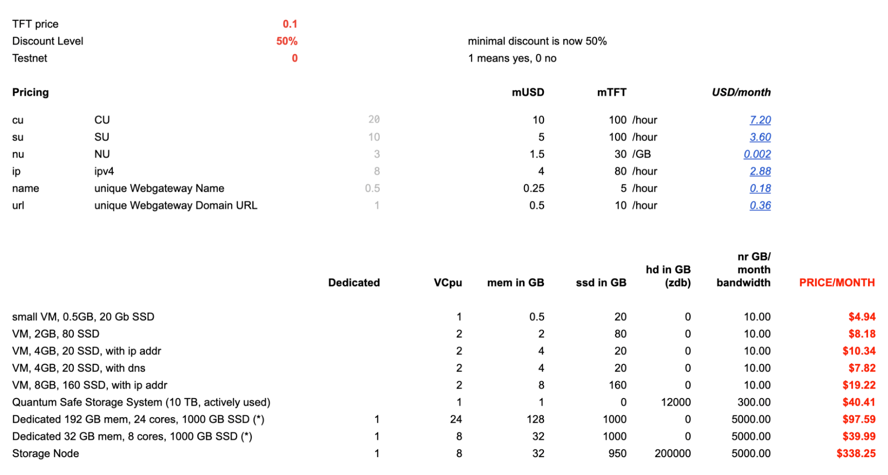
This is only with a 50% discount, partners can go to much more discount, the source doc can be found here.
More info see https://library.threefold.me/info/threefold#/cloud/pricing
Compare with others https://library.threefold.me/info/threefold#/tfgrid/pricing/cloud_pricing_compare
The Three Tokens in the ThreeFold Ecosystem
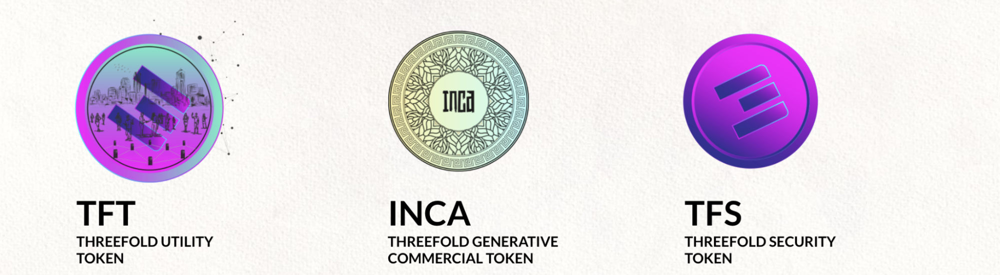
ThreeFold Digital Currency For An Upgraded Internet = TFT
TFT gets minted (farmed) as a result of independent farmers producing Internet capacity and keeping it connected to the ThreeFold Grid (network).
TFT are partially burned (destroyed) as a result of people using the capacity. The value of the token will rise reflecting the growth, size and value of the ThreeFold Grid. Current liquid market cap is only 20m USD, marketing hasn’t started yet. At the present time TFT powers +50,000 CPU cores and +90,000,000 GB of storage.
ThreeFold Generative Token = INCA (our commercial go2market token)
ThreeFold promotes the creation of Neighborhood Cloud projects together with real estate partners or other communities. Each project gets their own INCA (INternet CApacity) token. Each INCA generates a certain amount of TFT per month for 5 years. A Neighborhood Cloud allows the local community to experience ultra fast and reliable Internet with advanced use cases like rendering in the cloud of metaverse and gaming use cases. It can be perceived as having access to your own supercomputer co-owned by everyone in the community. Not only does this supercomputer allow advanced use cases but it also generates income for everyone involved.
ThreeFold Security Token = TFS (result of our investment round)
A real security token. Planned end 2022. The TFS = ThreeFold Security Token corresponds to shares in TFTech Company (Belgium) which is the company that develops and owns the open source technology which makes the ThreeFold Grid possible. TFTech uses this technology for commercial use cases as well as building solutions on top of the ThreeFold Grid. TFTech also sells INCA Neighborhood Internet projects (see above).
TFGrid Utilization Growth
In 2023 the following partner projects will launch on our 3rd generation of the ThreeFold Grid generating massive utilization.
We are scaling out our organization to be able to deliver the following projects (our first focus projects)
- COUNTRY IN AFRICA
- Delivery of a country-wide, sovereign & sustainable internet solution
- BANKING PLATFORM FOR A COUNTRY
- Development of a banking platform on top of TFGrid, should start Q3/Q4 2022
- SIKANA
- Educational Video Platform
- 4Billion Educational Videos delivered to students
- TAG (TAKE ACTION GLOBAL): 2.700.000 STUDENTS
- Climate change projects combined with education and a new internet.
- OOTOPIA
- Tiktok for good, help regenerate the planet.
- Social app on top of Digital Twin
- UHURU (now also called FreeFlow)
- Alternative to gdocs, whatsapp, zoom… on top of ThreeFold Grid
- VIRTUAL REALITY and METAVERSE PLATFORM
- A futuristic VR platform for the Metaverse, but running on our grid.
- See https://tube.freeflow.life/video-channels/verse/videos
- BLOCKCHAIN JUKEBOX
- More than 10 blockchain projects want to use our ThreeFold Grid Capacity
- Our Weblets will allow anyone to deploy their own Blockchain in minutes,
or provide validator nodes to existing chains.
- MOBILE PHONE COMPANY = TINGO
- 15.000.000 existing users paying monthly, provide apps on ThreeFold grid.
- Creation of small farming boxes (computers), expand user base, provide local capacity.
- ZOOM ALTERNATIVE ON THREEFOLD GRID = Kutana
- An efficient decentralized Zoom alternative, running in a private context.
- ODE: Open Data Economy
- ODE, the world’s first vertically integrated consumer data ecosystem. Creating a future where enterprises become trusted partners to their digital consumers, on top of TFGrid.
- DIGICORP LABS
- Partnership between ThreeFold and Digibyte project
- Focus on Fortune 100 enterprise customers.
- OPENNEBULA: https://opennebula.io/ , Cloud Management Platform on top of TFGrid
- LYRID - https://www.lyrid.io/, Serverless Cloud Functions on top of TFGrid
- COMPUTE COIN NETWORK - https://www.computecoin.network/, Cloud Management Platform on top of TFGrid
Our challenge at the present time is not generating sales opportunities, it is scaling execution capability to expand the grid and deliver on the projects which are in front of us, each week brings yet another significant new opportunity. However, through decentralization, improved documentation, roadshows and promotion we will scale up very quickly over the next few years.
Timeline
- 2017: launch of ThreeFold Token (on our own blockchain)
- 2018: launch of ThreeFold Grid 1.0
- 2018: +5000 CPU cores, +10.000.000 GB storage capacity deployed (only for test workloads)
- 2019: launch of ThreeFold Grid 2.0, TFT to Stellar blockchain
- 2021 Q3: +17.000 CPU cores, +80.000.000 GB storage capacity deployed
- 2021 Q4: Nov 11, 1000 farmers milestone, 1000 farmers provide capacity on TFGrid
- 2021 Q4: launch of ThreeFold Grid 3.0 testnet
- 2022 Q1: marketing & public launch of our ThreeFold Grid version 3.0 (first availability for commercial use)
- 2022 Q1: first INCA project closed (5m USD deal in Dubai)
- 2022 H2: announcement of first country-wide agreement for ThreeFold Grid deployment
- 2023 H1: commercial launch of Owncloud on TFGrid 3.0 (there are 200m Owncloud Users in World)
- 2023: TAG = climate change project, +2m Students go on TFGrid 3.0
- 2023: Expansion for NeighborHood Clouds (close at least 10 projects)
- 2023: Close on 60m USD funding round (STO) + Larger Fund Liquidity Pool
- 2023: Introduction of Internet of Internets Concept
- 2023: compelling virtual reality platform (metaverse) launches on TFGrid 3.0